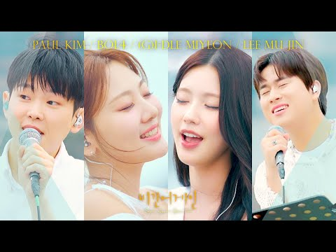

One of the most popular music TV shows in Korea "Begin Again."
This program features famous artists performing busking at various locations. The participants are mostly highly skilled Korean musicians who prepare music tailored to the unique characteristics of each area, delivering moving performances. The show authentically showcases the spontaneity of the artists' performances and their musical passion. During the preparation period for busking, viewers see the singers practicing, along with footage of actual live recordings and audio, allowing the audience to feel as if they are traveling through a specific area and experiencing the music firsthand.